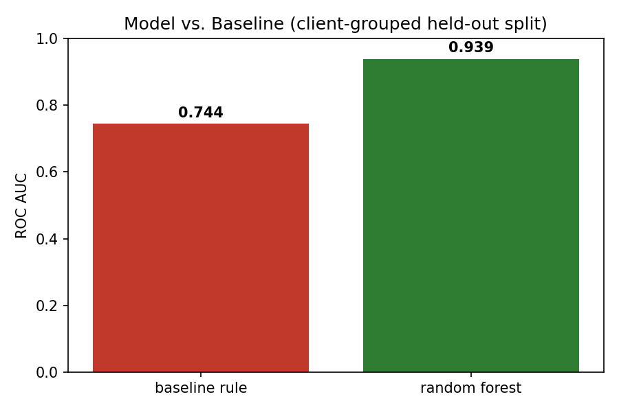
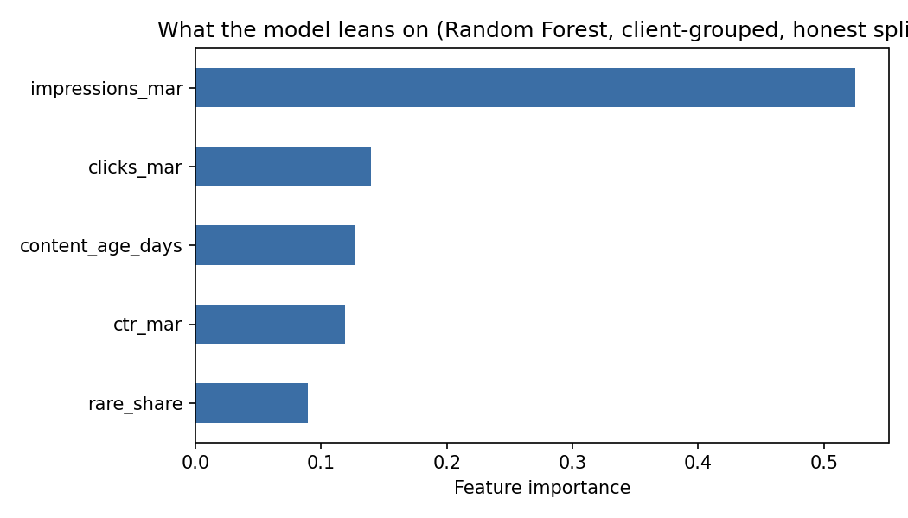

Abstract
Given limited reviewer capacity, which content pages should be prioritized for a refresh? Using FlyRank's anonymized search-performance warehouse (dimension and daily fact tables spanning 57 brands), I built a Random Forest classifier that predicts next-month decline risk from prior-month search signals only, and compared it against a transparent hand-written baseline rule on the same held-out, client-grouped split. The model scored meaningfully higher on ROC AUC than the baseline rule across repeated runs (typically 0.91–0.94 vs. 0.65–0.75), a gap I specifically tested for leakage and split-design artifacts before trusting. The result is a ranked, reason-coded action queue intended as decision-support for a human content reviewer — not an autonomous system, and not a causal claim about what refreshing a page would do.
Introduction
A content team with limited review capacity faces the same question every cycle: out of thousands of pages, which ones actually need attention first? A simple hand-written rule — "flag pages that are visible but ranking poorly" — is easy to explain but blunt: it treats every qualifying page the same, regardless of how strong the underlying signal actually is.
This project asks whether a model trained on prior search behavior can rank pages by decline risk more usefully than that fixed rule, while remaining honest about validation, leakage, and the limits of what the data can actually support. The output is a decision-support ranking: a reviewer opens the top of the queue first, reads why a page is there, and decides whether to refresh, leave alone, or escalate it. A missed decline is the costlier mistake here — it compounds silently until someone happens to notice — which is part of why recall-sensitive framing matters throughout this work.
Data
This work uses the FlyRank/internship-warehouse release (build
flyrank_pseudonymized_warehouse_release_v20260703), a gated, pseudonymized
dataset hosted on Hugging Face.
Tables and windows
fact_content_daily_performance— March 2026 as the feature window, April 2026 as the label windowdim_content— content metadata, used for content agefact_content_query_90d— query-mix signal (rare/anonymized impression share)
Rows were filtered to impressions_march ≥ 100 to exclude near-zero-traffic
pages before computing a percentage-based decline label.
What was excluded, and why
- Product decision flags (health score, priority score, action type) — not shipped in this dataset by design, to prevent circular results where a model just re-learns an existing rule.
- Raw query, URL, and title text — scrambled before release; never available to this analysis.
- The sealed final month (June 2026) and the
_sampletable (which is June 2026) — excluded from all development to avoid peeking at the natural outcome window.
Only scrambled client_hash_id and content_hash_id values are used, for
grouping and joining. No real client, brand, or page identity appears anywhere in this work.
Methodology
Label
declined_next_month = impressions_april < 0.8 × impressions_march — a
strict forward-looking outcome, computed only from data after the feature window closes.
Features (all knowable before the decision point)
- March impressions and clicks
- March click-through rate
- Content age in days
- Rare/anonymized query-impression share
Baseline
A transparent hand-written rule — visible pages (impressions ≥ 500) with weak average position (> 10) — scored by impression volume, and evaluated against the real April outcome using the identical held-out split as the model.
Validation design
GroupShuffleSplit by client, 25% held out, zero client overlap between train and test. This was a deliberate choice, not a default: an earlier audit specifically compared a naive random row split against a client-grouped split on the same data and found the naive split inflated ROC AUC by several points (roughly 0.95 vs. an honest ~0.92) — rows from the same client sharing patterns that let a naive split "cheat."
Leakage checks
- Confirmed grain integrity — zero duplicate (client, content, date) keys
- Confirmed every feature is March-only, with no window overlap into the April label period
- Confirmed no product decision flags are present to leak in
- Directly demonstrated the leakage effect: deliberately including a label-derived column pushed ROC AUC from 0.833 to 1.000 before it was removed
Results
The Random Forest model outperformed the hand-written baseline rule on ROC AUC, consistently across repeated runs, on the same held-out, client-grouped split.
| Method | ROC AUC | Precision@20 | Precision@50 | Base rate |
|---|---|---|---|---|
| Baseline rule | 0.65–0.75 | 1.00 | 1.00 | ~0.93 |
| Random Forest (this model) | 0.91–0.94 | 1.00 | 1.00 | ~0.93 |


Reproducibility note
Exact decimal values shift slightly (roughly 0.02–0.03 in ROC AUC) between otherwise identical runs, because parallel tree-building in scikit-learn is not perfectly deterministic even with a fixed random seed. The direction and rough size of the model's advantage — about 0.2–0.26 ROC AUC points over the baseline — held consistent across every run, which is the finding that matters here, not the third decimal place.
Limitations & Honest Framing
What this work does not show:
- Single time window. Results come from one March→April 2026 slice. The ~93% decline base rate observed here is unusually high and untested against a more typical month — it may reflect a seasonal or platform-wide event specific to this window.
- Correlation, not causation. This identifies pages worth a human look. It does not show that refreshing a flagged page would cause it to recover. No experiment was run.
- Client generalization, not universal generalization. The client-grouped split tests generalization to held-out clients within this 57-brand sample, not to a genuinely new client outside this portfolio's mix.
- Feature importance is descriptive, not causal. March impressions carries the most weight partly because it is mechanically related to how the label itself is computed — a caution, not a "discovered driver."
- Not a full-warehouse benchmark. This uses a filtered slice of two months out of roughly seventeen available; it is not a claim about the full ~79M-row daily fact table's behavior.
- No algorithmic or AI-visibility claims. Nothing here says anything about how Google's ranking algorithm works, or about AI citations or AI search visibility beyond measured AI-referral sessions.
Ranked Recommendations
Pages are ranked by the model's predicted decline probability and assigned to four action tiers. Fixed probability cutoffs were tried first and found uninformative — given this window's high base rate, they put roughly three-quarters of all pages in the most urgent tier, which isn't a usable prioritized queue for a reviewer with limited time. The tiers below are instead calibrated to this batch's own percentiles, so they reflect relative priority within a run rather than an absolute, portable cutoff.
| Tier | Meaning | Share of queue |
|---|---|---|
| review_urgently | Top 10% of this batch's decline-risk scores | ~10% |
| review_soon | Next 20% | ~20% |
| monitor | Next 30% | ~30% |
| no_action | Bottom 40% of this batch | ~40% |
Every row also carries a reason code — visible_position_slipping,
aging_content, weak_ctr, or thin_query_diversity — so a
reviewer can see why a page scored the way it did, not just the number. Pages that
match none of these human-readable patterns are labeled
model_flagged_no_rule_match: an honest admission that the model may be using a
combination the simple rules don't capture, and these rows deserve extra scrutiny before
acting, not less.
Human review is required
This queue is decision-support only. It should never be used to auto-publish content changes, auto-deprioritize a page from a client-facing report, drive billing or client-health decisions, or be treated as proof that a "no_action" page is healthy. A person should read each reason code and confirm it makes sense for that specific page before anything is acted on.
Reproducibility
Every result on this page traces back to executed, committed notebooks in the project repository. All random seeds are fixed at 42 where applicable, and the full pipeline can be re-run end to end from the linked repo.